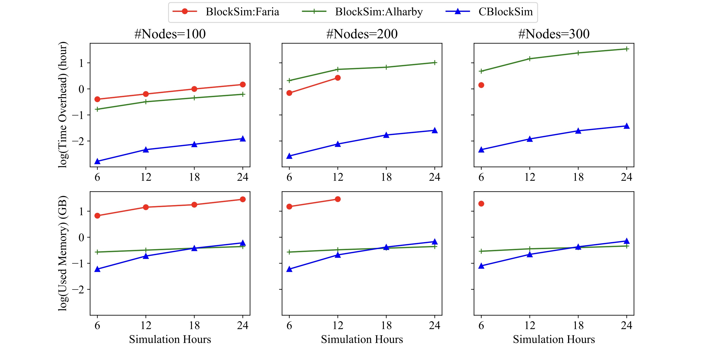
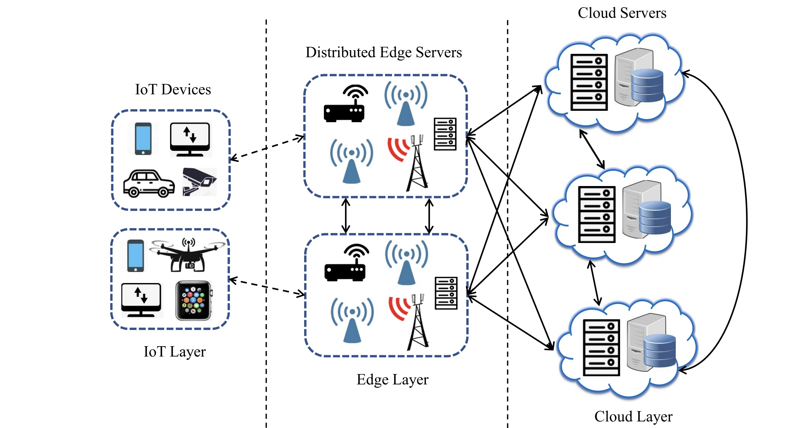
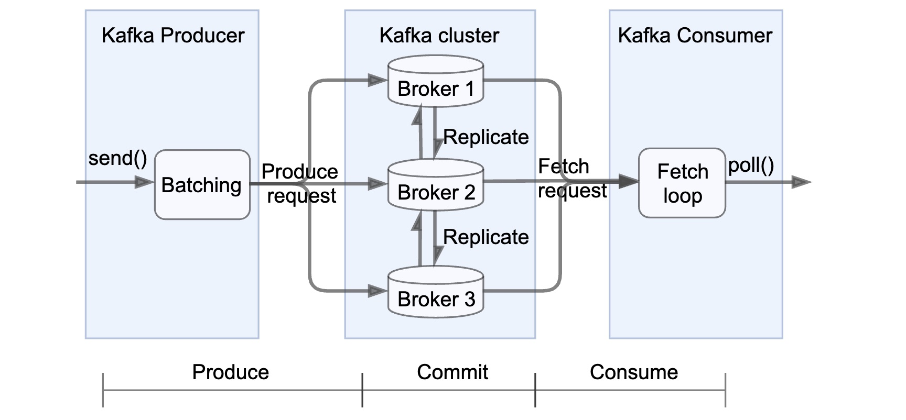
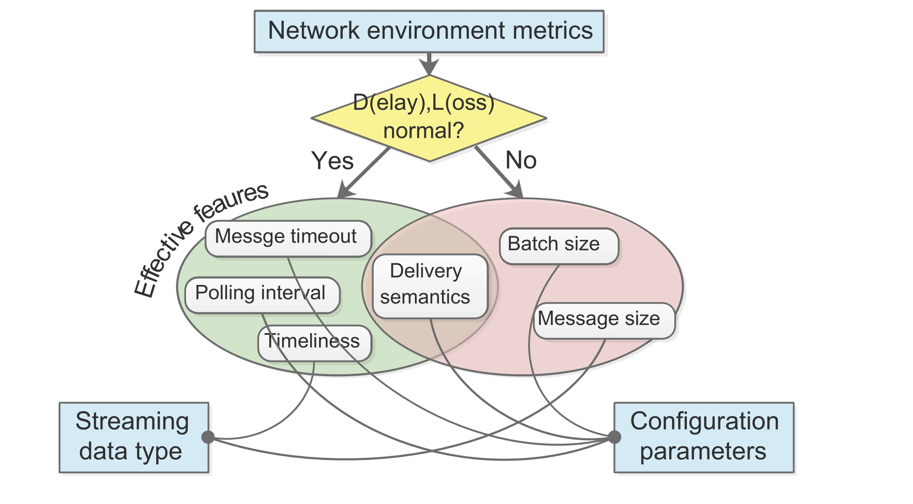
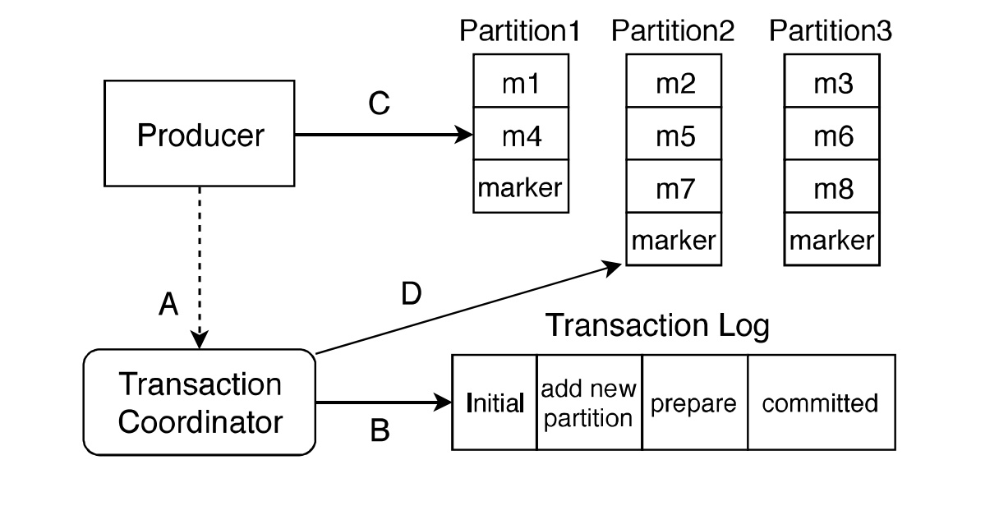

Selected Publications
Under Review

Future Generation Computer Systems

Complex online harms and the smart home: A scoping review
Shola Olabode, Rebecca Owens, Viana Nijia Zhang, Jehana Copilah-Ali, Maxim Kolomeets, Han Wu, Shrikant Malviya, Karolina Markeviciute, Tasos Spiliotopoulos, Cristina Neesham, Lei Shi, Deborah Chambers
The Future Generation Computer Systems journal, December 2023
ISSRE 2022

ECML PKDD 2022

ICBC 2022
IEEE IoT
ISSRE 2020
DSN 2020
ISSREW 2019
